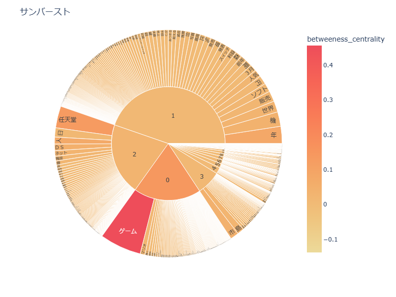
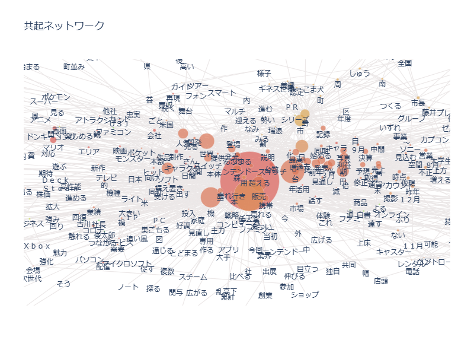

【1985年以降】


【まとめ】
1984年以前は、色で言葉が分類される程、ゲーム以外で様々なことが懸念された記事であったことが分かる。また、「おもちゃ」などの単語が多い。「任天堂」以外のメーカー名も比較的多く出ていることから、現代よりも競争が激しかったと推測できる。
1985年以降は、「ニンテンドースイッチ」「ソフト」や、「あつまる」「森」「シリーズ」から、『あつまれどうぶつの森』の流行が連想できる。また、「世界」から現代で任天堂のグローバル化がうかがえる。
共通点としては、「家庭」や「人気」という単語がある。このことから、ゲーム人気や家庭用ゲーム機に注力していることは変わらないと考えられる。